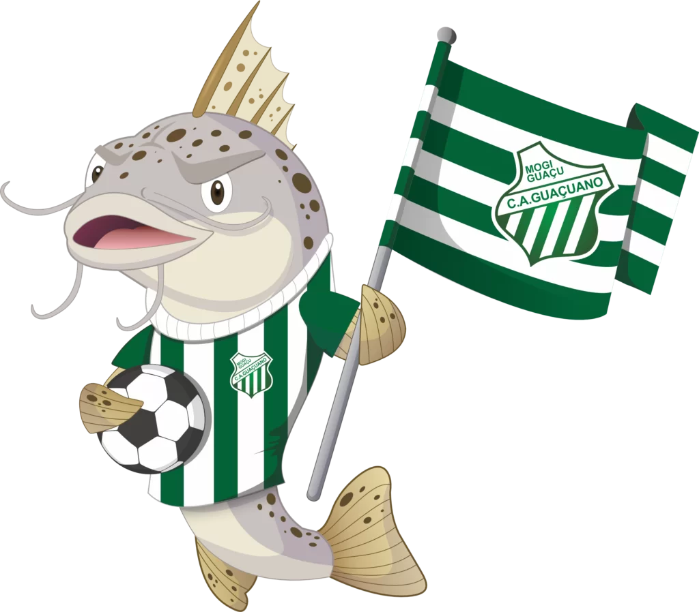

O Clube Atlético Guaçuano foi fundado em 26 de fevereiro de 1929 em Mogi Guaçu, São Paulo, inicialmente com o nome de Chaminé Clube. Conhecido pelas cores verde e branca e pelo mascote Mandi, o time iniciou sua trajetória no futebol amador regional.
A profissionalização ocorreu em 1975, quando estreou nas competições da Federação Paulista de Futebol (FPF). Seus principais títulos foram as conquistas da segunda divisão paulista em 1975 e 1977, além da Série B2 em 1981.
Com mais de 30 participações em torneios de acesso estaduais, o clube manda seus jogos no Estádio Municipal Alexandre Augusto Camacho. Atualmente, após períodos de licenciamento, o Guaçuano foca no resgate de sua memória esportiva e na forte ligação com a comunidade local.
